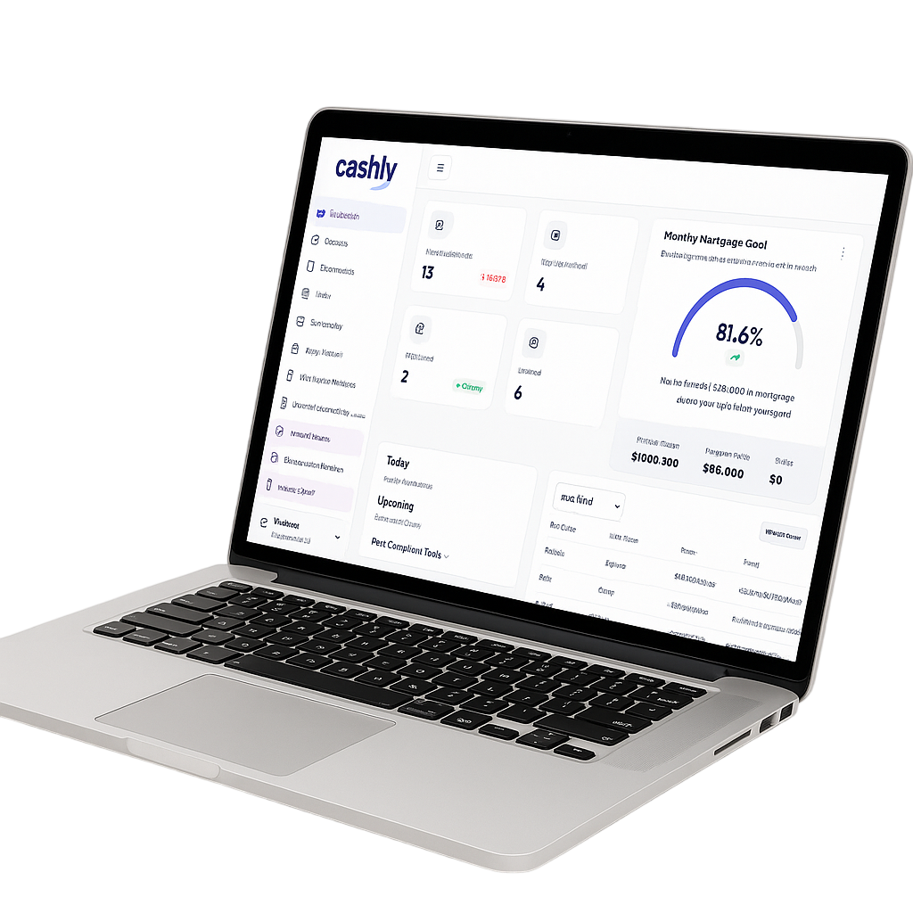
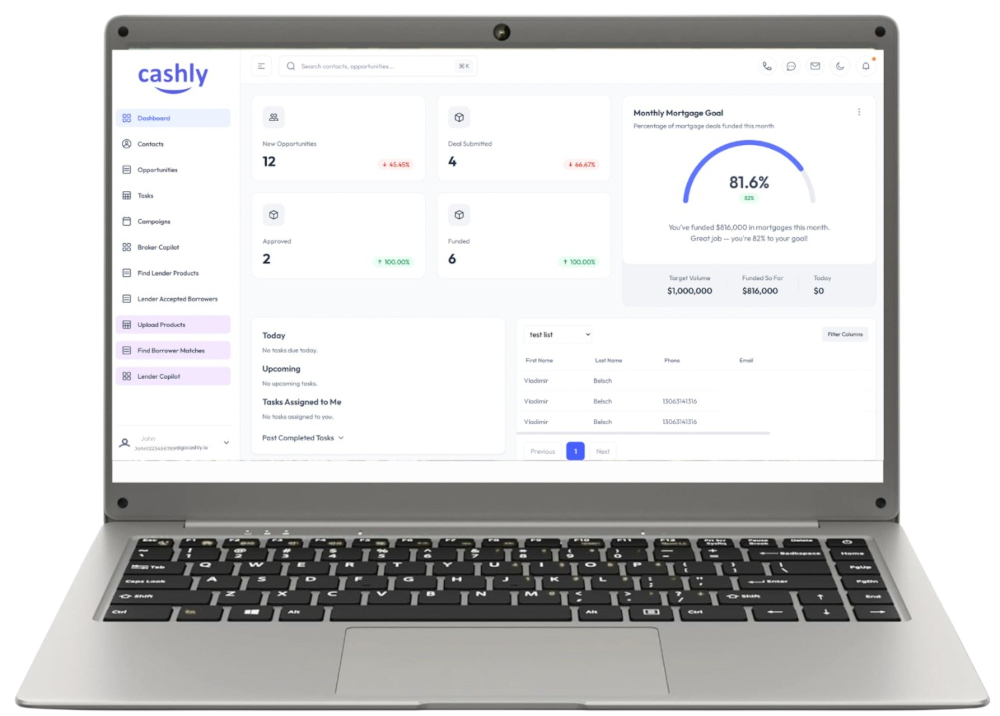
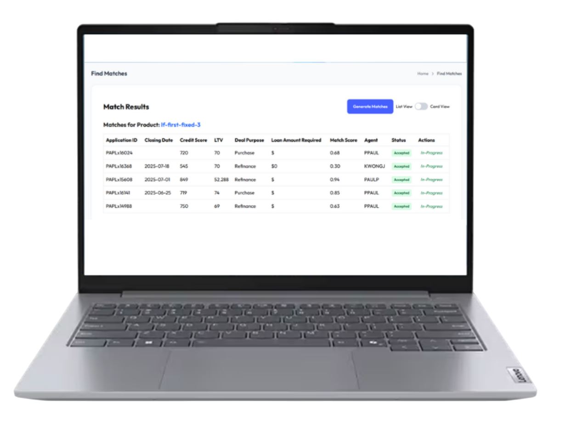

Organize borrower details, property context, and initial notes from the first conversation.
Broker Workspace
A cleaner CRM for brokers managing complex private mortgage files.
The borrower story lives on the homepage. This page is where the broker-side workflow lives: intake, lender matching, reminders, notes, documents, and day-to-day file management in one place.
Pipeline visibility
Lender coordination
Notes and reminders
Pipeline
Track every file, owner, and next step from intake to close in one clean view.
Matching
Keep lender-fit thinking connected to the real borrower file instead of scattered notes.
Service
Send clearer updates and keep the borrower experience polished while staying organized.
Daily visibility
Pipeline, tasks, and progress in one clean view.

Built for brokers
Manage contacts, docs, reminders, and lender communication together.

What lives here
Everything related to CRM now sits in the Broker workspace.
This is where your team manages borrower records, activity history, tasks, lender conversations, notes, reminders, and supporting documents without jumping between tools.
- Keep the full file in one place from first call to funded deal.
- Track tasks, reminders, and follow-ups with less manual chasing.
- Organize notes, documents, and status updates around the actual borrower file.
- Support borrowers with faster, cleaner communication throughout the process.
Broker flow
A more reliable workflow from lead to funded file.
Cashly gives broker teams a consistent operating rhythm across intake, qualification, lender matching, and follow-up.
Review the file with clearer structure so the next recommendation is easier to make.
Keep lender criteria, borrower fit, and deal strategy connected in the same workspace.
Drive follow-up, reminders, documents, and borrower communication without losing momentum.
Broker services
CRM features built for real brokerage work.
Instead of a generic sales CRM, Cashly gives mortgage teams the tools they actually use every day to manage the file and support the borrower.
Cashly CRM
Keep every file, owner, stage, note, and next step visible in one workspace built for brokers.
Lender Matching
Compare lender fit with borrower context in one place instead of relying on disconnected notes.
Deal Sense
Spot the right next move faster with clearer follow-ups, ownership, and deal context across the team.
Borrower communication
Support a more polished borrower experience with clearer updates and more consistent service.

Lender matching
Keep lender-fit thinking inside the same workspace.
Cashly helps broker teams review borrower context, compare lender criteria, and keep matching decisions connected to the actual file instead of scattered across inboxes and notes.
The goal is not more software. It is a cleaner way to manage the file and support the borrower.